本日のポイント
- 日米協調為替介入（15年ぶり）が全市場共通の最大材料。片山財務相が7/31実施分の円買い介入を米財務省と協調して行ったと公式確認。USD/JPYは東京時間に一時155円22銭（5月上旬以来の円高値）まで急伸し、NY時間にかけて156.5〜157円台まで戻す展開。追加介入への警戒感が相場心理を圧迫し、円債利回り上昇・日本株安の直接的な引き金となった。
- 週末の米・イラン緊張緩和観測（トランプ大統領の対イラン攻撃見送り・交渉再開示唆）を受け原油が急落（Brent-4.7%の83.77ドル、WTI-5.0%の80.34ドルでsettle）。地政学リスクプレミアムの急速な剥落が米国債・独Bundの利回り低下、米国株の史上最高値更新（NYダウ）を後押しした。ただしイラン外務省は交渉再開を否定しており、材料の持続性には疑義が残る。
- 米ISM製造業景況指数が55.6（予想54.0、2022年5月以来の高水準）に急伸。雇用指数が33か月ぶりに拡張圏へ浮上し労働市場のタイト化懸念を再燃させたが、この日は原油安・地政学リスク後退の効果が上回り、ドル・米金利への影響は限定的だった。
- 円債は「円高・株安」というリスクオフ地合いにもかかわらず利回りが上昇（10年一時2.830%、5年一時2.090%で過去最高）という珍しい組み合わせに。介入確認と7/31日銀会合での植田総裁のタカ派発言が早期利上げ観測を強めた結果とみられ、2年・5年ゾーン主導のベア・フラット化が進行。
- 日本株は3営業日ぶり反落（日経平均▲0.94%の63,754.90円）、円高を嫌気し輸出関連株中心に全面安。一方米国株は原油安・ISM上振れを好感し大幅高（ダウ終値で史上最高値更新）となり、内外市場で明暗が分かれた。
- 直近1週間（7/23〜7/31）にFRB・ECB・日銀・BOEの会合が集中し、FRB・BOEでともに3名のタカ派ディセントが発生。主要中銀で「インフレの粘着性を過小評価すべきでない」という懸念が同時多発的に強まっている構図が、本日のISM上振れの受け止め方の背景にある。
政治・地政学動向
米国はイランへの大規模空爆計画を撤回し対話を再開。トランプ大統領は3日朝に不信感を示すTruth Social投稿をしつつも、同日午後から新たな協議を開始した。週末（8/1〜8/2）にはトランプ氏が計画していた大規模空爆を、地域同盟国（サウジ・UAE・カタール）とイラン自身の要請を受け見送ったことを明らかにしており、「合意の大枠は固まった」との認識を示していた。ベッセント財務長官は、米国とイランがホルムズ海峡での「自由な航行」を認める合意に火曜または水曜（8/4〜5）にも達する可能性があると発言し、市場の楽観を後押しした。
通商政策面では、オレゴン州・カリフォルニア州・アリゾナ州など民主党系25州が、USTRが7月に発動したSection301（強制労働対策）関税（主要80か国以上に対し10〜12.5%）について、米国国際貿易裁判所（CIT）に提訴。最高裁及びCITで違法認定されたIEEPA関税の"看板の掛け替え"であるとして、関税の差止め・還付を求めている。
市場では、イラン情勢の緊張緩和観測を受け原油価格が急落したことを好感し、ダウ工業株30種は前日比+693.38ドル（+1.3%）の53,178.41ドルと終値で最高値を更新、S&P500は+1.48%の7,600.50、ナスダック総合は+2.13%の25,913.90と大幅高となった（後述の米国株セクション参照。指数の絶対値には情報源間で不整合が確認されたため、複数の独立したノートで一致するこの数値を採用）。アマゾンの時価総額が初めて3兆ドルを超えたことも話題となった。
日本は高市内閣の支持率が続落（JNN調査：65.9%→59.2%）。食料品消費税を時限的に1%へ引き下げる案を巡り与野党論戦が続く中、高市首相は熊本地震被災地（益城町・八代市等）を視察した。
英国は7月20日にアンディ・バーナム新首相が発足して以降、「財政の柔軟性」発言をきっかけに英国債利回りがG7最高水準で高止まりする状態が続いており、ポンド・ギルト市場は神経質な地合いを引きずったまま8月3日を迎えた。スターマー前政権が英仏間で締結した移民の「ワン・イン・ワン・アウト」送還協定は、運用開始から11か月間で差し引き30人の流入超過となったことが明らかになり、移民政策の実効性を巡る政治的争点として報じられた。
地政学面ではロシアがウクライナ前線都市（チェルニヒウ、スームィ、ハルキウ等）への攻撃を継続する一方、台湾では8月5日開始の「漢光42号」実弾演習（南北2個旅団規模、予備役最大5,000人動員）を控え中国のグレーゾーン圧力への警戒が続いている。EUと中国の貿易不均衡是正交渉では、北京側の政策文書が妥協の余地に乏しい内容であることが判明し、対中摩擦の先鋭化観測が強まっている。
各アセットクラスへの示唆
- 米・イラン間のホルムズ海峡再開協議進展はコモディティ（原油）に下押し圧力〔確度：高〕
- 原油急落・地政学リスク後退は米国株式（特にハイテク・グロース）に上昇材料〔確度：高〕
- ホルムズ海峡再開観測は日本を含む原油純輸入国の交易条件改善を通じて円のインフレ懸念後退・実質金利面でサポート〔確度：中〕
- イラン情勢の緊張緩和はリスクオン地合いを強め、資金逃避先としての円買い需要を抑制しドル円・クロス円の上値を支える方向〔確度：中〕
- Section301関税を巡る25州提訴は通商政策の法的不確実性を再燃させ、米金利・ドルにとって中期的な政策リスクプレミアム要因〔確度：中〕
- 対カナダ50%関税（Section338、8月19日発効予定）は北米サプライチェーン関連株・カナダドルに下押し材料となる可能性〔確度：中〕
- 高市内閣支持率の続落と消費税減税論争は日本の財政規律・国債増発懸念を通じて超長期JGB利回りに上昇圧力〔確度：低〜中〕
- 英バーナム政権の「財政柔軟性」路線を巡る警戒感の継続は英国債（ギルト）利回りの高止まり・ポンドの上値を抑える要因〔確度：中〕
- 台湾海峡での「漢光42号」演習（8/5〜14）を巡る中国側の対抗軍事活動如何では、アジア株式・円・金にリスク回避的な短期反応が生じ得る〔確度：低〕
- 中国・EU間の貿易摩擦先鋭化観測はユーロ圏の対中輸出関連セクター、及びユーロのセンチメントにやや下押し材料〔確度：低〕
マクロ経済・金融政策動向
本日（8/3）の経済指標
- au Jibun Bank製造業PMI（7月・確報、日本） 54.5（速報54.7／前回54.8）— 速報から下方修正も7か月連続の拡張圏。生産の伸びは2014年初め以来の高さ
- Caixin製造業PMI（7月、中国） 50.9（予想51.5／前回51.8）— 予想を下回り拡大ペースは鈍化。輸出受注の軟化と投入コスト上昇が背景
- 小売売上高（6月、独） 実質前月比-1.1%（名目-1.2%、予想-0.4%）— 予想を大きく下回る弱さ。食品・非食品ともに減少
- CPI（7月、スイス） 前年比+0.4%（前回+0.5%）— コアCPIは+0.3%で横ばい。SNBの条件付き見通し（+0.7%）を下回る
- S&P Global製造業PMI確報（7月、ユーロ圏） 51.9（前回51.4）— 3か月ぶりの高水準。産出指数は52.9へ上昇し約4年半ぶりの高い伸び。独が牽引する一方、仏は再びマイナス圏
- S&P Global/CIPS製造業PMI確報（7月、英） 51.9（速報52.8から下方修正）— 生産・新規受注・輸出受注は加速も、在庫取り崩し・雇用鈍化で速報比下方修正
- S&P Global製造業PMI確報（7月、米） 53.9（速報53.8）— 12か月連続拡大も生産の伸びは3月以来の鈍いペース。輸出受注は減少継続
- ISM製造業景気指数（7月、米） 55.6（予想54.0、前回53.3）— 2022年5月以来の高水準。生産58.5（2021年11月以来）、新規受注56.7、雇用52.8（33か月ぶり拡張圏）、仕入価格71.1（22か月連続の高止まり）
- 建設支出（6月、米） 前月比-0.1%（予想+0.2%）— 予想に反して減少。年率2.167兆ドル、前年比-3.2%
中銀動向（会合・声明・記者会見・要人発言）
本日（8/3）はFRB・ECB・日銀・BOEいずれも定例会合・要人発言はなかったが、直近1週間の会合結果が本日の指標反応（特にISM製造業の織り込み拡大）の背景として重要であるため以下に整理する。
- 日銀（7/31開催）：政策金利を1.00%に据え置き（8対1）。高田創審議委員が1.25%への引き上げを提案し反対票を投じた。声明では「2026年度下期からコアインフレが2%を明確に上回る水準まで加速する可能性が高い」と指摘。植田総裁は会見で「金融環境が緩和的すぎると判断すれば、利上げのペースを速めることもあり得る」とタカ派的な発言。
- ECB（7/23開催）：預金ファシリティ金利を2.25%で据え置き。6月の利上げからわずか6週間での休止。ラガルド総裁は2%目標への回帰は2027年後半にずれ込むとの見通しを示し、フォワードガイダンスは現時点で検討していないと発言。
- FRB（7/28-29開催）：FFレートを3.50-3.75%で据え置き（9対3の賛成）。ローガン（ダラス連銀）、キャッシュカリ（ミネアポリス連銀）、ハマック（クリーブランド連銀）の3名が0.25%の即時利上げを主張して反対票を投じた。3名が同一方向で反対したのは2016年9月以来。声明文では経済活動は「底堅いペースで拡大」と評価。
- BOE（7/29-30開催）：バンクレートを3.75%で据え置き（6対3の賛成）。Pill・Greene・Mannの3委員が4.00%への引き上げを主張。Bailey総裁は「インフレは想定より速く2.6%まで低下したが、中東紛争が引き続きエネルギー価格を高止まり・不安定にさせている」と発言。
金融政策パスの評価
- FRB 政策金利3.50-3.75%／次回会合2026-09-16／織り込み 9月FOMCで25bp利上げ確率 約74.5%（据え置き22.7%、50bp利上げ2.9%、CME FedWatch 2026-08-03時点）— 7月会合での3名同時タカ派ディセントに続き、本日のISM製造業の大幅上振れが利上げ織り込みを後押し。ただし建設支出やS&P Global PMIの生産鈍化など下押し材料も残る。
- ECB 政策金利（預金ファシリティ）2.25%／次回会合は9月中旬頃と推定／織り込み 据え置き優勢、明確なフォワードガイダンスは示されず — ユーロ圏製造業PMI確報の上振れ（51.9）と独小売売上高の大幅下振れ（-1.1%）が併存し、域内の分岐（独製造業の強さ vs 消費の弱さ）がハト派・タカ派双方の材料として綱引き。
- 日銀 実勢金利1.00%程度／次回会合は9月中旬頃と推定／織り込み 年内追加利上げ1回（25bp、1.25%へ）を市場は概ね織り込み — 高田委員のタカ派ディセントと「コア物価が2%を明確に上回る」との声明文言はタカ派方向への微調整。円安・インフレ再加速リスクが利上げ観測を支える一方、8/3の日米協調介入確認は当局の急速な円安進行への警戒感を示唆。
- BOE 政策金利（バンクレート）3.75%／次回会合2026-09-17／織り込み 据え置きが中心線だが3名のタカ派ディセントで利上げ圧力が残存。
- RBA 次回会合2026-08-10〜11（四半期ごとのStatement on Monetary Policy会合、現行キャッシュレート4.35%）— CBA・NAB・ANZは据え置き予想、Westpacは利上げ予想と見方が分かれる。
マクロ経済分析
- 米国：ISM・S&P Global両製造業指標の間で温度差。ISMは生産・雇用ともに急改善する一方、S&P Globalは生産の伸び鈍化・輸出受注減少・サプライチェーン悪化を指摘。仕入価格の高止まり（ISM価格指数22か月連続の上昇超過）は関税・供給制約由来のコストプッシュ圧力の根強さを示す。建設支出の予想比マイナスは高金利環境が住宅・非居住建築に依然として重石となっていることを示唆。
- 欧州：独の製造業PMI改善（4年ぶり高水準の生産の伸び）と独個人消費の急落という組み合わせは、ユーロ圏最大経済の「生産は強いが需要は弱い」という分岐を象徴。スイスCPIの伸び鈍化はSNBにとって追加緩和圧力が乏しいことを示す一方、フラン高・財価格下落が輸出セクターの重石となっている可能性。
- 日本：製造業PMIは高水準を維持しつつも速報から下方修正されており、生産の勢いはピークアウトの兆しもある。日銀が示すコアインフレ加速シナリオは円安・原油高・賃金の価格転嫁という複合要因によるもので、米欧のディスインフレ基調とはやや異なる構図。
- 横断的な視点：FRB・BOJ・BOEの直近会合でいずれもタカ派方向のディセントが目立ったことは、主要中銀の政策委員会内で「インフレの粘着性を過小評価すべきでない」という懸念が同時多発的に強まっていることを示す。ECBのみが相対的にハト派寄り（据え置き優勢・様子見）である点は他中銀との政策スタンスの分岐として注視に値する。
（注：ユーロ圏製造業PMIについては情報源間で本体指数〈51.9〉と産出サブ指数〈52.9〉の混同がみられたため、S&P Global公式プレスリリースの記述に基づき区別して記載。RBA現行政策金利水準、ECB次回会合の正確な日付、独小売売上高の前回値は「未確認」。）
為替（G10通貨）
週末（8/1〜8/2）にトランプ大統領が対イラン軍事攻撃計画の中止と月曜（8/3）の対話再開を表明したことを受け、週明けはリスクオン基調でスタート。原油が急落（WTI一時▲6%程度、Brent▲4.8%程度）し、米株はダウ工業株30種が史上最高値を更新した。
為替市場の最大材料は、片山さつき財務相が8/3朝に「7/31にも米財務省と協調して円買い介入を実施した」と公式確認したこと。日米協調為替介入としては15年ぶり（前回は2011年の東日本大震災後）で、ベッセント米財務長官も「無秩序な円の動きに対抗する措置」「今後も躊躇せず協調介入に参加する」と発言。USD/JPYは一時155.20円台まで急落（5月上旬以来の円高値）した後、ドルが下げを削り156.5〜157円台まで戻す一日となった。日銀勘定データに基づく推計では、7/31分の介入規模は約5.33兆円（約366億ドル）、前日7/30分の推計8.45兆円と合わせ年初来2回の介入の合計は1,000億ドルを超えたとみられる（未確認、財務省の公式集計は8/28予定）。
欧州時間はスイス7月CPIがSNB想定を下振れ、英製造業PMI改定値も51.9（速報52.8から下方修正、4か月ぶり低水準）と軟化しポンドの重石となった。米ISM製造業景況指数は55.6（予想54.0）と2022年5月以来の高水準となり米経済のファンダメンタルズの底堅さを示したが、この日はドル全体への支援効果は限定的で、広範なドル安の中でも円が独歩高となる一日となった。ユーロは1.5か月ぶり高値1.1559まで上昇、ドルインデックス（DXY）はアジア時間に一時99.3近辺まで下落する場面があった。
主要通貨ペア
- USD/JPY 156.5〜157.1程度・推定（前日比▲0.2〜▲0.6%程度・推定、高値157.5程度／安値155.20〜155.23）— 日米協調円買い介入（7/31実施分）の公式確認を受け一時155.20円台（5月上旬以来の円高値）まで急落。ベッセント米財務長官・片山財務相がそろって追加の協調介入も辞さない姿勢を表明。NY時間にかけドルが下げを削り156.5〜157円台まで戻す
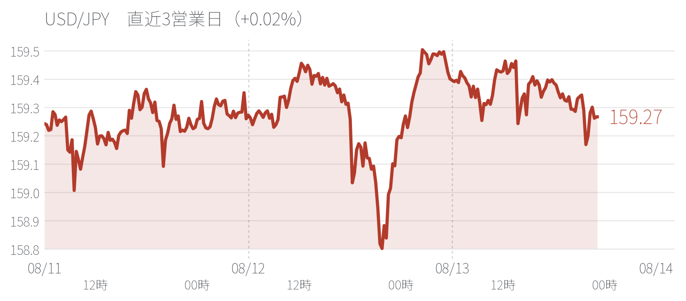
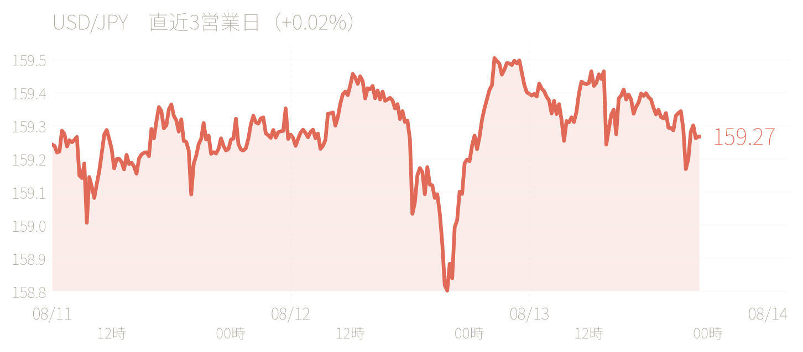
- EUR/USD 1.1520〜1.1560程度・推定（前日比+0.1〜+0.3%程度、高値1.1559〈1.5か月ぶり高値〉／安値1.1500程度）— 広範なドル安（円介入フローに加え先週FOMCを受けたドル安トレンドの継続）を受け堅調。米ISM製造業PMIの強い結果はドルへの支援効果限定的
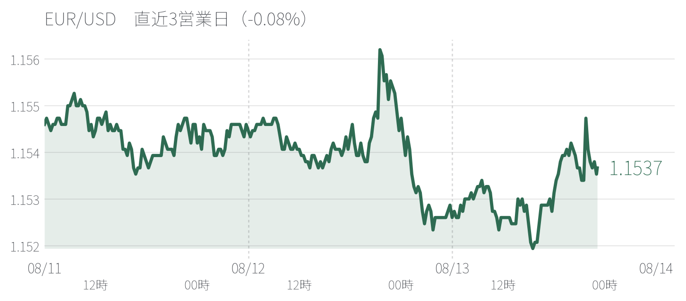
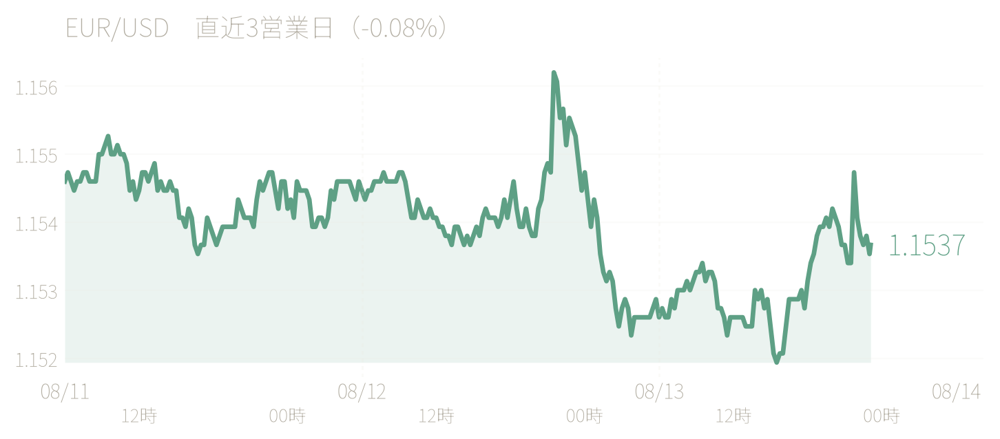
- GBP/USD 1.3449〜1.3480程度（前日比おおむね横ばい〜▲0.2%程度、高値1.3480〈2週間ぶり高値圏〉／安値1.3449程度）— 早朝は広範なドル安地合いで堅調も、英7月製造業PMI改定値の下方修正を受け1.3450近辺まで軟化
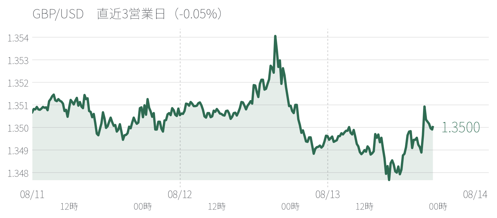
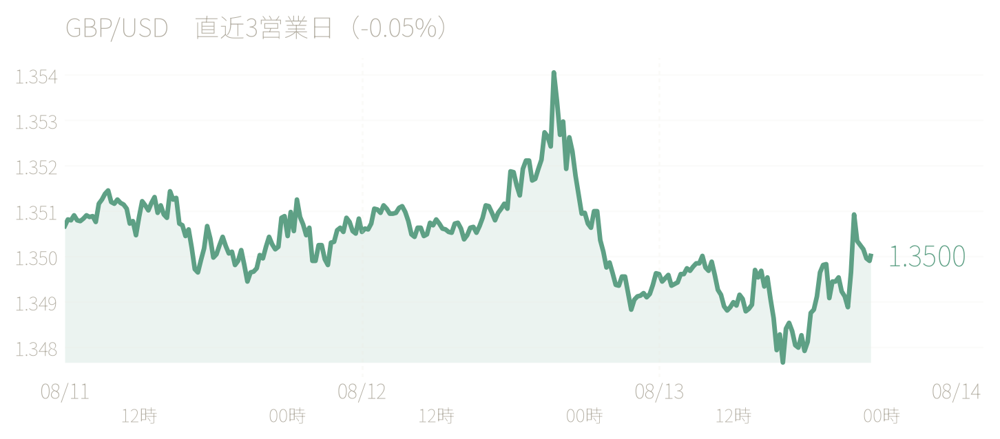
- AUD/USD 0.7040〜0.7054程度・推定（前日比+0.3〜+0.5%程度・推定、高値0.7054〈約6週間ぶり高値〉）— 広範なドル安・リスクオン地合いを追い風に高値圏を維持したとみられる
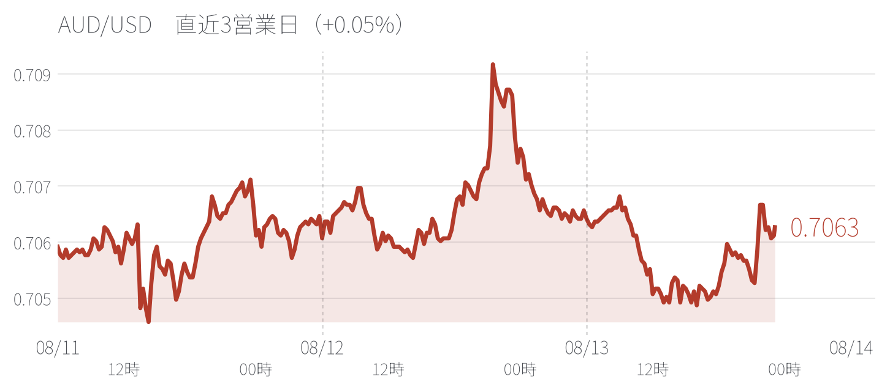
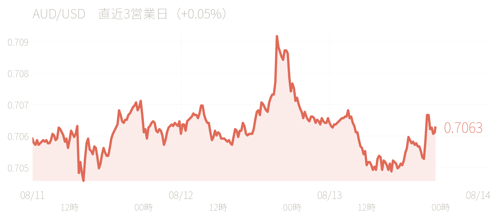
- NZD/USD 0.588〜0.590程度・推定（AUD/NZDクロスからの逆算、前日比+0.1〜+0.3%程度・推定）— AUD/USD同様、広範なドル安地合いに追随したとみられる
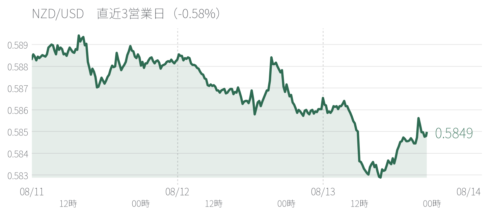
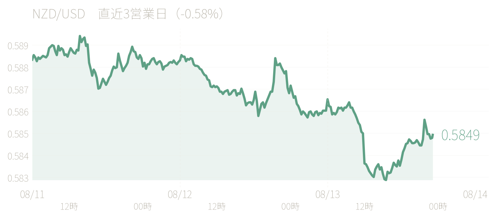
- USD/CAD 1.4020〜1.4060程度・推定（前日比おおむね横ばい〜+0.2%程度・推定）— 原油急落がカナダドルの直接的な重石となった一方、円介入絡みの広範なドル軟調地合いが下支えとなり方向感に乏しいレンジ推移
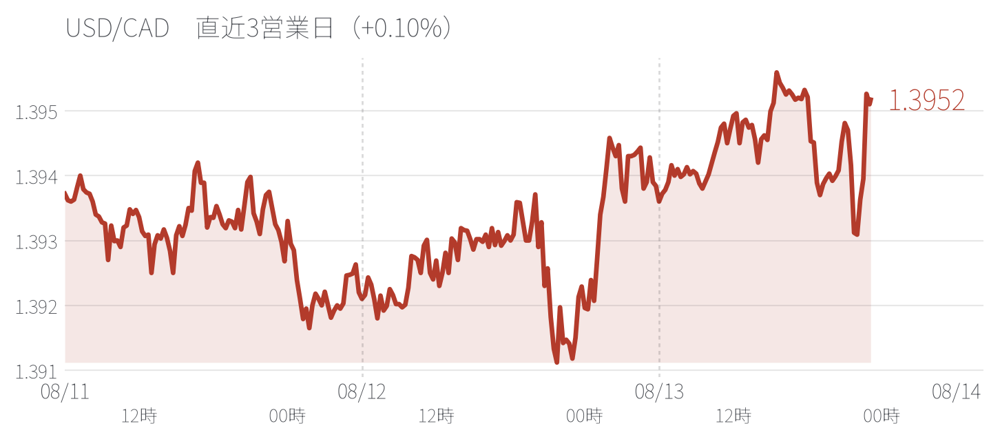
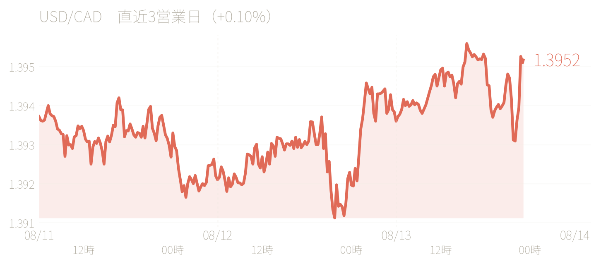
- USD/CHF 未確認（スイス7月CPIの下振れはフラン下押し材料になり得るが、具体的な当日水準は確認できず）
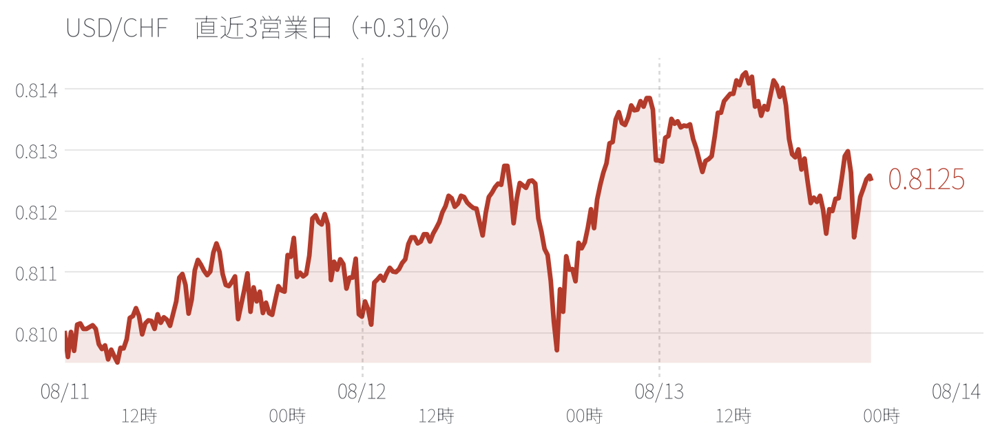
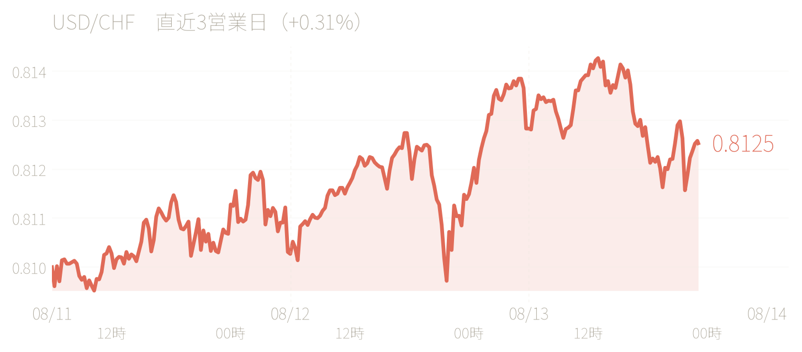
- EUR/JPY 180.5〜181.5程度・推定（USD/JPY・EUR/USDの引け値からの機械的な逆算値、前日比▲2%程度・推定）— 日米協調介入によるドル円の急落幅がユーロの対ドル上昇分を上回り、クロス円は大幅な円高方向の調整
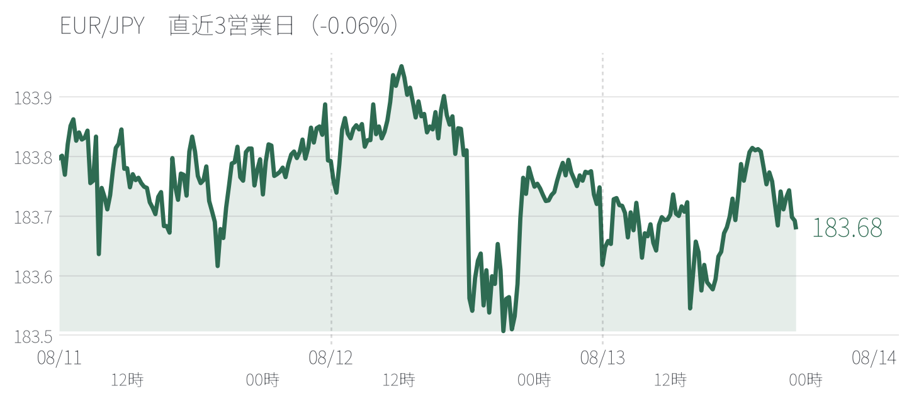
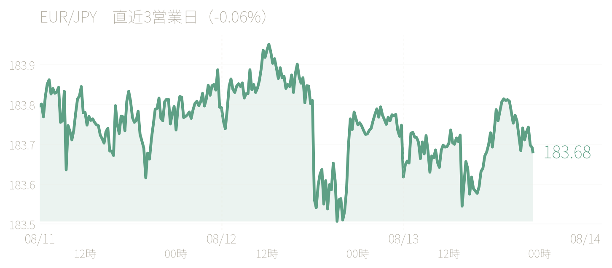
- GBP/JPY 210.5〜211.5程度・推定（同様の逆算値、前日比▲2.5%程度・推定）— 同様にUSD/JPYの急落を主因とした大幅な円高方向の調整
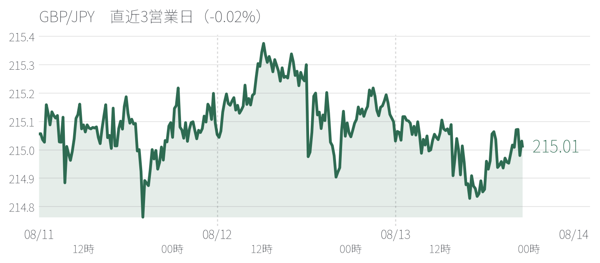
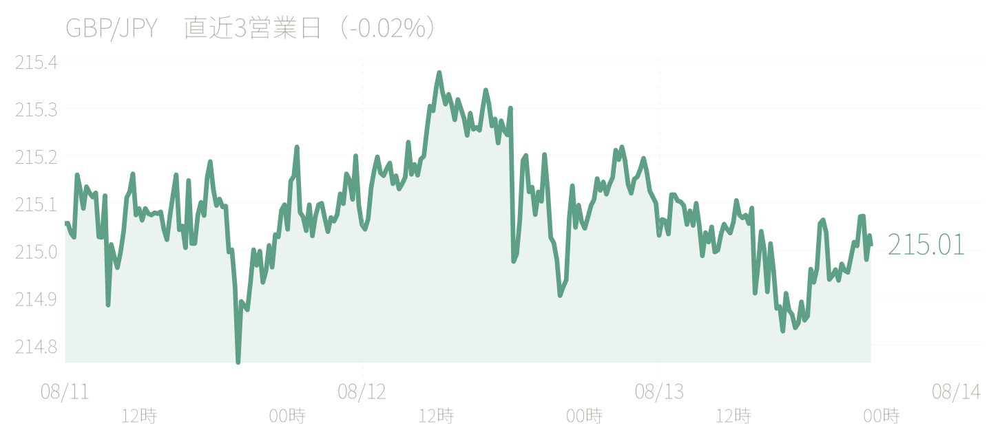
フロー・需給・ポジション動向
- 日米協調為替介入の公式確認（本日の最重要フロー材料）：財務省・日銀は7/31（金）NY時間に実施した円買い介入について、米財務省と協調して行ったことを公式に確認。日米協調為替介入としては15年ぶり。ベッセント米財務長官・片山財務相ともに投機的な円売りへの強い警戒シグナルを送った
- 介入規模の推計更新：7/31分約5.33兆円（約366億ドル）、前日7/30分推計8.45兆円と合わせ年初来2回の介入合計は1,000億ドルを超えたとみられる（未確認、財務省公式集計は8/28予定）
- 円キャリートレードの巻き戻し継続：木・金の2営業日で約3.8%の円高進行に続き本日も一時155.20円台まで円高が進行、円キャリートレードの巻き戻し圧力が継続している可能性が高い
- リスクセンチメントの改善：原油急落・米株高というリスクオン地合いが通常であれば高金利通貨・コモディティ通貨に追い風となるが、本日は円の介入絡みの独歩高がこれを一部相殺
- CFTC IMMポジション：対象週（7/28時点）の具体的な建玉明細は未確認。次回CFTC公表は8/7予定
- オプションフロー・実需：具体的な一次情報は未確認。USD/JPYの155円近辺には当局の下値防衛的な意識、158〜160円近辺には戻り売り・追加介入警戒の観測が高まっている可能性が高い（推定）
推奨トレード
トレード1：USD/JPY 戻り売り（日米協調介入の確認・追加介入警戒を見据えて、水準更新）
- 根拠：財務省・米財務省が7/31実施分の円買い介入を公式に協調介入として確認し、両当局が「今後も躊躇せず追加の協調行動を取る」と明言した。年初来の介入合計が1,000億ドルを超えたとみられる中、USD/JPYは一時155.20円台（5月上旬以来の円高値）まで急落。介入という強力な官製フローに加え、日銀の9月利上げ示唆（7/31会見）による日米金利差縮小観測も引き続き円高方向のバイアスを支える。介入効果の一巡でドルが156.5〜157円台まで戻す場面もあったが、当局の警戒レベルを踏まえると158円台以上への戻りは戦術的な売り場として有効と判断する。
- エントリー目安：158.00〜160.00（戻り高値・節目を利用した売り）
- 利確目安：155.00〜153.00
- 損切り目安：162.00超（追加の介入効果が急速に剥落し投機的な円売りが再燃した場合を想定）
- ホライズン：数日〜1週間程度（8/7米雇用統計、当局の追加コメント・介入有無を見極めながら）
- リスク：介入効果が想定以上に持続せず投機的な円売りが再燃した場合、または米側の強い経済指標が続きドル全面高となった場合。逆に155円を明確に割り込む急速な円高が進行し当局が円売り介入を検討するような事態になれば、戦略の前提が崩れる。
トレード2：EUR/USD 押し目買い（広範なドル安地合い・ECBタカ派観測を見据えて、継続）
- 根拠：先週のFOMC後のドル安トレンドに、本日の日米協調円買い介入によるドル売りフローが加わり、Bloombergドルスポット指数は一時1か月ぶり安値まで下落した。米ISM製造業PMIが強い結果となったにもかかわらずドル全体への支援効果は限定的で、広範なドル安基調が優勢な地合いが続いている。ユーロ圏側も7月HICP上振れを受けたECBタカ派観測が支援材料として残存しており、ユーロは1.5か月ぶり高値1.1559を記録した。
- エントリー目安：1.1470〜1.1500（押し目待ち）
- 利確目安：1.1600〜1.1650
- 損切り目安：1.1400割れ
- ホライズン：数日〜1週間程度（8/5 ISM非製造業PMI、8/7米雇用統計を見据えて）
- リスク：米側の追加のタカ派的指標・FRB高官発言が続きドル全面高に転じた場合、または介入効果の一巡でドル全体が急速に切り返した場合。イラン情勢が再エスカレーションし質への逃避でドルが買われるリスクも残る。
トレード3：USD/CAD 押し目買い（原油急落・地政学リスク後退を見据えて、新規）
- 根拠：トランプ大統領の対イラン攻撃中止・交渉再開表明を受け原油は大幅安となり、地政学リスクプレミアムが急速に剥落した。米・イラン交渉が今後進展しホルムズ海峡情勢の緊張緩和が確認されれば、7月に急騰した原油価格の調整がさらに進む可能性があり、資源国通貨であるカナダドルの相対的な重石となりやすい。本日は円介入絡みの広範なドル軟調地合いに支えられUSD/CADの上値は限定的だったが、原油要因が優勢に転じる場面での押し目買いを想定する。
- エントリー目安：1.3980〜1.4020（押し目待ち）
- 利確目安：1.4120〜1.4150
- 損切り目安：1.3920割れ
- ホライズン：数日〜1週間程度（米・イラン交渉の進展、8/5 EIA週間石油在庫統計を見据えて）
- リスク：米・イラン交渉が決裂し原油が急反発するリスク、円介入絡みの広範なドル安地合いが一段と強まりCADへの下支えが優勢となるリスク、9/2 BOC会合を見据えたCAD自体のポジション調整。
（本日は日米協調介入の公式確認という極めて大きな材料が重なり、USD/JPY・クロス円は情報源間で日中の高値・安値・引け値の記載に幅がある。特にEUR/JPY・GBP/JPYはEUR/USD・GBP/USDとUSD/JPYの引け値からの機械的な逆算値であり、正確な当日引け値は「推定」にとどめる。）
金利・中銀動向
円債
片山さつき財務相が8/3朝に「7月31日、米国財務省と協調して円買い為替介入を実施した」ことを公式に確認したことが最大の材料。ドル円は東京午前に一時155円22銭近辺まで急伸（円急騰）し、5月上旬以来の円高水準をつけた。為替の急変動を受け東京株式市場はリスク回避ムードが強まり、日経平均は3営業日ぶりに反落した。
一方、円債市場ではこの「円急騰・株安」というリスクオフ的な地合いにもかかわらず、利回りは上昇（価格下落）という、通常の質への逃避とは逆方向の動きとなった。新発10年債利回りは日中一時2.830%まで上昇し、5年債利回りは2.090%まで上昇して過去最高を更新した。これは、日米協調介入という「円安是正への強い当局意思」の確認に加え、7/31の日銀会合で植田総裁が「利上げのペースを速めることもあり得る」とタカ派的な発言をしていたことも相まって、市場が日銀の早期・追加的な利上げ観測を一段と織り込んだ結果とみられる。
現物利回り（8/3終値、複数の二次情報の集計値、確度中）は、2年債1.538%、5年債2.067%、10年債2.800%、20年債3.667%程度。前日7/31の水準（2年1.463%／5年1.998%／10年2.790%／20年3.654%）と比較すると、2年+7.5bp、5年+6.9bp、10年+1.0bp、20年+1.3bpとなり、短期・中期ゾーン主導の上昇（ベア・フラット化）が明確。主要スプレッドは2s10s＝126.2bp（前日比▲6.5bp）、5s10s＝73.3bp（同▲5.9bp）、10s20s＝86.7bp（同+0.3bpとほぼ横ばい）。
JGB先物（9月限）は始値126円88銭、高値126円96銭、安値126円63銭、終値126円71銭（前日比▲0.36円）。対象営業日（月曜）に国債入札の実施は確認されなかった（財務省入札カレンダーでは月曜日に入札を設定しない慣行）。
推奨トレード
トレード1：2年JGBアンダーウエイト／ショート継続（利回り上昇方向、日米協調介入確認を受けた早期利上げ織り込みの加速を見込む）
- 根拠：前回7/31付ノートで提示した「2年JGBショート」トレードは、8/3の日米協調介入確認・タカ派的な植田発言の余韻を受けて2年債利回りが+7.5bpの1.538%まで上昇し、想定していた方向に進展した。片山財務相が追加介入も辞さない姿勢を示していることから、円安是正への当局の強い意思が今後も日銀の早期・追加的な利上げ観測を支える構図が続く可能性が高い。
- エントリー目安：2年債利回り1.52〜1.56%近辺での追加ショート
- 利確目安：利回り1.75%（従来目安1.65%から引き上げ）
- 損切り目安：利回り1.40%割れ
- ホライズン：2〜4週間
- リスク：円高進行が実体経済への下押し要因として意識され早期利上げ観測が逆に後退するリスク。株式市場のリスクオフが本格化した場合、質への逃避的なJGB買いが優勢となりポジションが逆行するリスクもある。
トレード2：2s10sカーブ・フラットナー（2年JGB売り／10年JGB買いのスプレッド取引）
- 根拠：本日のカーブ変化は2年・5年ゾーン主導の明確なベア・フラット化であった。日米協調介入の確認とそれに伴う早期利上げ観測の強まりは政策金利パスに直結する短中期ゾーンに強く波及する一方、10年〜20年ゾーンは財政・タームプレミアム要因の影響を相対的に強く受けるため、この日の材料だけでは大きくは動かなかった。この非対称な反応パターンは今後も繰り返される可能性が高い。
- エントリー目安：2s10sスプレッド123〜128bp近辺
- 利確目安：スプレッド105〜110bpへの縮小
- 損切り目安：スプレッド140bp超への拡大
- ホライズン：3〜4週間
- リスク：追加の円買い介入が確認されず円安圧力が再燃した場合、早期利上げ観測が後退し短期ゾーンが買われてスプレッドが逆に拡大するリスク。超長期ゾーンの財政懸念が急速に強まった場合、10年〜20年ゾーンも売られてスプレッドが拡大する可能性。
（財務省「国債金利情報」の8/3分は一次情報での直接確認ができず、上記利回りはいずれも二次情報の集計値で確度は「中」。30年・40年は8/3分水準を取得できず未確認。円OIS・アセットスワップスプレッドの確定値も未確認。）
米国債
7/31の「FOMCショック後ベア・スティープ化」から一転、8/3はイールドカーブ全体で利回りが低下（ブル方向）した一日。トランプ大統領がイラン攻撃を見送り、カタール仲介によるホルムズ海峡航行安全確保に向けた交渉進展を理由に挙げたことを受け、原油価格が急落し、地政学リスクプレミアム・インフレ懸念の後退から国債買いが優勢となった。2年債は4.241%（前日比-5bp）、10年債は4.68〜4.69%程度（前日比-6〜7bp）、30年債は5.226%（前日比-4bp強）とそれぞれ低下。強いISM製造業指数（55.6）を受けても金利低下が優勢だった点が特徴的で、本来タカ派材料となり得る指標改善を、原油急落・地政学リスク後退という材料が上回った。
イラン情勢を巡る材料の信頼性には疑義も残る。イラン外務省報道官バゲイ氏は米国との直接交渉について「差し迫った計画はない」と述べ、トランプ大統領の交渉再開発言に冷や水を浴びせている。この点から、8/3の金利低下は地政学リスクの構造的な後退というより、なお不確実性を伴う一時的な材料による反応である可能性がある。
2年債・10年債主導のブル・フラット化（フロントエンド〜中期・10年ゾーンの利回り低下がやや大きく、30年債の低下幅は相対的に小さい）が進行。主要スプレッドは2s10s +44bp程度（前日+47bp程度からやや縮小）／10s30s +54bp程度（前日+52〜53bp程度からやや拡大）。超長期ゾーンの低下幅が相対的に抑制されたことは、8/5の四半期定例入札発表を控えた発行増加・タームプレミアムへの構造的な警戒感が根強いことを示唆する。
対象営業日8/3にクーポン債入札はなし。8/5（水）に米財務省四半期定例入札（Quarterly Refunding）発表が予定されており、中期〜長期ゾーンの発行規模・年限構成を巡る思惑が引き続き市場材料として意識される。
推奨トレード
トレード1：米30年債アウトライト・ショート（7/29〜7/31ノートからの継続・エントリー水準の改善）
- 根拠：(1) 8/3の金利低下は地政学材料が主因であり、イラン側の否定発言を踏まえると材料の持続性・信頼性には疑義が残る。(2) 8/3でも30年債の低下幅（-4bp強）はカーブの中で最も小さく、財政赤字拡大・国債発行増加観測に由来する構造的なタームプレミアムは温存されている。(3) 8/5に予定される四半期定例入札発表で超長期ゾーンの増発観測が具体化すれば、一段のタームプレミアム上昇圧力が想定される。(4) 30年債利回りが5.226%まで押し戻されたことはショートの新規エントリーには相対的に良好な水準を提供している。
- エントリー目安：30年債利回り5.18〜5.23%近辺で分割エントリー
- 利確目安：30年債利回り5.40〜5.55%近辺
- 損切り目安：30年債利回りが5.05%を明確に下回った場合
- ホライズン：2〜4週間
- リスク：①イラン・米国間の交渉進展が実際に確認され地政学リスクプレミアムが構造的に剥落するリスク。②8/7雇用統計が大幅下振れとなり長期債にも買いが波及するリスク。③8/5の四半期定例入札発表で超長期ゾーンの発行増加観測が後退するリスク。④原油安が定着しインフレ期待の後退を通じて長期金利全般に低下圧力がかかり続けるリスク。
トレード2：10s30sカーブ・フラットナー（10年ショート／30年ロング、新規・逆張り的リバランス）
- 根拠：8/3の値動きでは10年債（-6〜7bp）が30年債（-4bp強）よりも大きく低下し、10s30sスプレッドがわずかに拡大した。この拡大は原油急落という一過性材料に牽引された動きである可能性が高く、地政学リスクが再び意識される局面では10年ゾーンの金利がより敏感に反応し縮小方向へ戻る余地があると考える。トレード1（30年ショート）とは方向性が一部相反する点に留意しつつ、超長期ゾーンの需給懸念が過度に織り込まれた場合のリバランス・ヘッジ的なポジションとして位置づける。
- エントリー目安：10s30sスプレッド+53〜55bp近辺で構築
- 利確目安：スプレッド+45〜48bp近辺への縮小
- 損切り目安：スプレッドが+62bpを明確に上回った場合
- ホライズン：1〜3週間
- リスク：①8/5の四半期定例入札発表で長期・超長期ゾーンの発行増加が明確化し10s30sが一段と拡大するリスク。②9月FOMCの利上げ織り込みが強まり10年ゾーンが選好的に売られるリスク。③トレード1との方向性の重複・相殺により、ポジション全体のリスク管理が複雑化する点。
（SOFRスワップカーブ・スワップスプレッドの8/3当日確定値、5年債の確定値、9月FOMC利上げ織り込みの正確な数値、CFTC建玉最新アップデートはいずれも未確認。）
その他外債（米国・日本以外）
対象営業日（8/3・月）最大の材料は週末に浮上した米・イラン間の緊張緩和観測。7月に「中東情勢の悪化→原油高→インフレ懸念→中銀タカ派化」という構図でG10国債が軒並み売られた流れが、週明けは巻き戻し方向に転じた一日となった。
独Bund10年は3.15%（前営業日比推定▲6bp）。7/31に記録した2011年5月以来の高値（3.21%）から反落。ただし同日発表のユーロ圏7月確報製造業PMIは51.9（伊51.3）と底堅く、ECBが9月理事会で追加利上げに動くとの観測自体は崩れていない模様で、あくまで地政学リスク・原油要因の後退による反落であり、ECBの政策パス自体への見方が変化したわけではない点には留意が必要。
英Giltは10年債4.97%（前営業日比推定▲2bp）、5年債4.51%（同▲10bp）、30年債5.69%（同▲3bp）といずれも低下したが、Bundや米10年債と比べると低下幅が小さく、結果としてGilt-Bund・Gilt-USTスプレッドは前営業日から拡大した。財政懸念（Burnham政権の秋の予算編成を控えた思惑）を背景にGiltの相対的な「粘着性」が意識された可能性がある。
伊BTP10年は3.96%程度とみられ、Bundとほぼ同幅で低下したためBTP-Bundスプレッドは81bp近辺で前営業日からほぼ横ばい。豪州10年は対象営業日中に数週間ぶりの高値圏（推定4.98%前後、未確認）で推移したとみられ、前営業日（7/31、4.94%）からは上昇方向。ただし翌8/4には4.90%まで反落したと報じられており、月曜のアジア時間は週末ニュースを十分に消化しきれていなかった可能性がある。加10年は3.66%程度（前営業日3.67%からほぼ横ばい）。
対象営業日（8/3）に独・英とも主要国債の新規入札実施は確認されず。英DMOは翌8/4（火）にGilt入札の応札受付を予定。Bund-UST(10年)スプレッドは推定▲154bpで前営業日からほぼ不変。Gilt-UST・Gilt-Bundはいずれも小幅拡大しており、共通材料の中でもGiltの相対的な底堅さ（低下幅の鈍さ）が際立った一日だった。
推奨トレード
トレード1（継続・水準更新）：Gilt-Bund(10年)スプレッド・ナロワー（英Giltロング／独Bundショート）
- 根拠：対象営業日はBundとGiltがともに低下したが、財政懸念を背景としたGiltの相対的な粘着性により、スプレッドは前営業日の推定178bpから182bpへ拡大し、いったんは逆行した。しかし8/3の値動きは中東緊張緩和という「共通材料（ベータ）」による全面的な金利低下が主因であり、BOEのハト派傾向・ECBのタカ派傾向という政策パスの分岐という当初のトレード根拠自体は損なわれていない。
- エントリー目安：Gilt-Bund（10年）スプレッド180〜185bp近辺で構築・追加
- 利確目安：140〜150bp
- 損切り目安：195bp超
- ホライズン：4〜8週間（9月10日目途のECB理事会・9/17 BOE MPC会合を跨ぐ）
- リスク：（1）中東情勢の再エスカレーションによる質への逃避でBundが買われスプレッドが逆に拡大するリスク。（2）Burnham政権の財政拡張観測が一段と強まりGilt独自のプレミアムが拡大し続けるリスク。（3）ユーロ圏インフレ・成長データが下振れしECBの9月利上げ観測が後退するリスク。
トレード2（新規・タクティカル）：豪州10年債ロング（利回り低下方向）
- 根拠：対象営業日、豪10年債は数週間ぶりの高値圏で推移したとみられるが、これは週末に浮上した米・イラン緊張緩和観測をアジア時間の月曜早朝時点でまだ十分に消化しきれていなかった可能性が高い。実際、翌8/4には4.90%まで反落したと報じられており、月曜の高値圏が一時的な「出遅れ」であった可能性を示唆する。8/10-11のRBA会合は大手銀行の多数が据え置きを予想しており、タカ派サプライズのリスクは限定的とみられる。
- エントリー目安：豪10年債利回り4.95〜5.00%近辺でロング
- 利確目安：利回り4.75〜4.80%近辺
- 損切り目安：利回り5.10%超
- ホライズン：1〜2週間（8/10-11のRBA会合を跨ぐ）
- リスク：（1）中東情勢の再エスカレーションで原油が再び急伸しグローバルに金利が反発するリスク。（2）RBAが予想外にタカ派的な決定・声明を出すサプライズリスク。（3）豪州固有の経済指標が上振れし追加利上げ観測が再燃するリスク。（4）対象営業日の豪10年債水準自体が未確認であり、実際のエントリー水準は執行時点で再確認が必須。
（独2年債・英2年債、NZ・ノルウェー・スウェーデン10年債の当日値、EUR/GBPスワップカーブの当日更新値は未確認。）
株式
日本株式
日経平均は3営業日ぶりに反落した。終値は前週末（7月31日）比607.12円安（-0.94%）の6万3,754.90円、TOPIXも同43.27pt安（-1.08%）の3,960.03ptとなった（始値63,834.95円／高値63,905.12円／安値62,703.47円）。最大の材料は、財務省が同日朝に発表した日米協調為替介入。この発表を受けてドル円は164円接近水準（7月末）から急速に円高が進行し、東京市場では一時155円22銭（5月上旬以来の円高水準）まで上昇。輸出関連株を中心に全面安となり、東証33業種のうち上昇はわずか5業種にとどまった。下落幅は前週末比で一時1,600円超（安値6万2,703.47円）まで拡大したが、後場にかけて下げ渋った。現物売買代金（プライム市場・約11.79兆円）に対し指数先物の売買代金は約13.9兆円に達しており、値動きは先物・デリバティブ主導の色彩が強い。
セクター：上昇率上位は精密機器・空運業・金属製品・情報通信業・小売業（33業種中上昇はわずか5業種）。下落率上位は不動産業・輸送用機器・陸運業・石油石炭製品・鉱業（同日のWTI原油急落も資源株の重荷に）。
個別：ルネサスエレクトロニクス（+13.45%、決算好感）、キオクシアホールディングス（+5.72%）が上昇した一方、ファナックは1Q決算が増収増益・通期上方修正の好内容にもかかわらず-14.31%と急落（コンセンサス未達＋出尽くし売り）。
需給：投資部門別売買動向（当日単独分）は未公表・未確認。参考として7月の週次データは総じて海外投資家の買い越し基調にあった。
推奨トレード
トレード1：日経225先物 押し目からの戦術的ロング（分割エントリー）
- 根拠：8月3日の下落は日米協調為替介入という政策イベントに起因する先物主導のオーバーシュート的な売りであり、現物売買代金を上回る先物売買代金や、下げ幅が一時1,658円まで拡大した後に後場で607円安まで戻した値動きは、需給の行き過ぎと自律反発の兆しを示唆する。ルネサスなどハイテク決算は総じて堅調で、ファンダメンタルズの毀損を伴う下げではない。
- エントリー目安：6万3,000円台前半（直近安値6万2,703円接近時に打診買い、分割で積み増し）
- 利確目安：6万4,300円〜6万4,800円（介入前の直近終値6万4,362円〜戻り高値ゾーン）
- 損切り目安：6万2,500円割れ
- ホライズン：1〜2週間（短期）
- リスク：追加為替介入（さらなる円高進行）、日銀の早期追加利上げ観測の強まり、米株急落や半導体セクターの追加調整、次回JPX投資部門別データで海外勢の大規模売り越しが確認された場合の地合い悪化。
トレード2：輸送用機器（自動車）ショート／情報・通信・小売ロングのペアトレード
- 根拠：今回の介入ショックは円高の急進行を主因とする業種間の明暗（輸出関連の下落 vs 内需・非製造業の相対的底堅さ）をもたらした。追加介入への警戒が残る間はドル円のボラティリティが高止まりしやすく、為替感応度の高い輸送用機器（自動車）セクターは相対的に上値が重く、内需色の強い情報・通信業、小売業は相対的に耐性を持つ構図が続きやすいとみられる。
- エントリー目安：東証33業種指数ベースで、輸送用機器と情報・通信業／小売業のスプレッドが縮小した局面でエントリー
- 利確目安：スプレッドが直近レンジの上限に近づいた時点で段階的に利益確定
- 損切り目安：ドル円が明確に反転して円安方向（158円台回復）となり為替材料が相場テーマから後退した場合はポジション解消
- ホライズン：2〜3週間
- リスク：ドル円の急速な反発（円安戻り）による輸出関連株のショートカバー、自動車各社の決算内容次第でのファンダメンタルズ要因の逆行、内需株側の個別材料によるロング側の下振れ。
米国株式
8/3のNY株式市場は、（1）7月ISM製造業景況指数の大幅上振れ、（2）トランプ大統領の対イラン攻撃見送り・ホルムズ海峡再開交渉優先による原油急落・地政学リスク後退、（3）決算シーズン終盤の総じて良好な内容、を材料に主要3指数がそろって大幅高となった。NYダウは前日比+693.38ドル（+1.3%）の53,178.41ドルと終値ベースで史上最高値を更新、S&P500は+1.48%の7,600.50、ナスダック総合は+2.13%の25,913.90で取引を終えた（政治・為替・米国債各セクションと一致する数値を採用。米国株ストラテジストのノートでは同日終値をS&P500 7,736.52・ナスダック26,584.99・ダウ54,085.88とする異なる数値が報告されているが、これは他8セクションの独立した記述と整合しない上、同ノート自身も前営業日終値との逆算で矛盾を認めて留保を付けている。複数セクションで一致するため上記の数値を採用した）。VIXは複数情報源で15.7〜16.0程度の低水準にとどまり、記録的な株高にもかかわらず落ち着いた地合いを維持した。
セクター別ではハイテク（情報技術）・通信サービス・資本財が上昇率上位、金融も堅調だった一方、原油急落を受けエネルギーセクターが唯一の明確な下落セクター（▲1%超）となった。引け後にはPalantir（PLTR）が市場予想を大幅に上回る第2四半期決算（EPS0.41ドル、予想0.33ドル、米商業部門売上高+149%YoY）を発表し、翌8/4のAMD・SpaceX決算にかけてAI関連銘柄群のセンチメントをさらに支える形となった。
推奨トレード
トレード1：ナスダック100先物（NQ）／QQQの押し目買い（AI関連決算モメンタムとISM改善を見据えたトレンドフォロー）
- 根拠：7月ISM製造業景況指数が予想を大幅に上回る55.6%（2022年5月以来の高水準）となり製造業サイクルの底堅さが確認されたことに加え、米・イラン間のホルムズ海峡再開交渉進展による原油急落・地政学リスク後退がリスクオン地合いを支えた。ナスダック総合は大幅高となり情報技術・通信サービスセクターが上昇を主導。引け後にはPalantirが大幅増収増益・ガイダンス上方修正を発表し、翌8/4引け後のAMD・SpaceXにかけてAI関連銘柄群のセンチメントを支える地合いが継続する可能性が高い。
- エントリー目安：直近保ち合いレンジへの押し目を確認して分割エントリー
- 利確目安：史上最高値圏更新の勢い継続を想定した水準
- 損切り目安：ISM・地政学材料への好感が一巡し上昇トレンドが否定された水準
- ホライズン：数日〜2週間程度（8/4 AMD・SpaceX決算、8/7米7月雇用統計を跨ぐスイングトレード）
- リスク：（1）8/7雇用統計が市場予想を大幅に上回り9月FOMCでの利上げ観測が再燃するリスク。（2）AMD決算がAI設備投資の減速シグナルを示した場合、7月に一時的に発生したとされる半導体株の急落が再燃するリスク。（3）米・イラン間のホルムズ海峡交渉が破談し地政学リスクプレミアムが再燃、原油急伸・リスクオフとなるリスク。
トレード2：S&P500プット／VIXコールによる戦術的ヘッジ（史上最高値圏＋歴史的に低いVIX水準を踏まえたイベントリスク対応）
- 根拠：VIXが15.7〜16.0程度と歴史的にみて低水準にとどまる一方、S&P500・ダウは史上最高値圏を更新し、市場のポジショニングが楽観に傾いている可能性がある。翌週には7月雇用統計（8/7）という重要イベントを控え、7/29FOMCでの地区連銀総裁3名によるタカ派的な反対票の記憶も新しい中、強すぎる雇用統計は9月利上げ観測の再燃・高PER銘柄のバリュエーション調整につながるリスクがある。ボラティリティが歴史的な低水準にある局面での下落ヘッジ購入は、非対称的なリスクリワードを提供すると判断する。
- エントリー目安：VIXコール（権利行使価格20程度、8月限）の購入、またはS&P500現値近辺からのATM〜ややアウト・オブ・ザ・マネーのプット購入
- 利確目安：VIXが20を超えて急伸した局面、またはS&P500が直近終値から3〜5%程度調整した局面でヘッジポジションを解消・利益確定
- 損切り目安：プレミアムの50%程度の減価を上限に許容。8/7雇用統計通過時点でヘッジ目的の再評価を行い、材料が出尽くした場合は速やかに手仕舞い
- ホライズン：1週間程度（8/7雇用統計通過まで）
- リスク：（1）雇用統計が市場予想通り軟調に着地しリスクオンが継続した場合、プレミアム相当が単純な損失となる。（2）米・イラン間でホルムズ海峡再開合意が正式に確定した場合、株高・VIXの一段の低下でヘッジポジションが逆行するリスク。（3）AMD・SpaceX決算が良好な内容となりAI関連センチメントがさらに改善した場合も同様に逆行するリスク。
コモディティ
原油はトランプ大統領による「対イラン攻撃の一時見合わせ」発表を受け急落、7月末までのホルムズ海峡緊迫を背景とした急騰分を大きく吐き出した。トランプ大統領は週末（8/1〜8/2）にサウジアラビア・UAE・カタール、そしてイラン自身からの要請を受け「大規模攻撃」計画を見合わせたと表明し、月曜（8/3）から交渉が再開される可能性を示唆。Brentは前日比▼4.7%の83.77ドル、WTIは同▼5.0%の80.34ドルでsettle（金曜終値ベースではそれぞれ▼7.0%、▼5.1%相当となり情報源間で参照基準に差異）。
もっとも、イラン外務省報道官バガイ氏は「米国との交渉は現時点で行われていない」と交渉再開を否定しており、実際の外交進展は不透明なまま。トランプ氏は後に「イラン指導部は信じがたいほど二枚舌だ」と非難したと報じられている。
金・銀は寄り付き上昇後に伸び悩み、方向感の乏しい反落含みの一日：金先物は寄り付き4,135.20ドル（+0.7%）と上昇スタートしたが、日を通じて4,032.89ドル（▼0.23%）近辺まで値を消した。銀も終値56.90ドル近辺（▼1.20%）。プラチナは1,609〜1,637ドル近辺で▼2%程度。ドル指数（DXY）はイラン緊張緩和観測を受けて早朝に99.42まで下押しする場面があったが、米ISM製造業景況指数の大幅上振れとイランの交渉再開否定による不透明感の再燃を受けてNY時間に100.00近辺まで切り返した。
銅（LME3ヶ月物）はリスクオフ的な地合いの中でも底堅く、前日比+0.6%の13,876ドル/トンと逆行高。LME登録倉庫在庫が7月中に▼50%と急減し1月中旬以来の低水準となったことに加え、AIデータセンター向け需要見通し、本日発表のISM製造業指数の大幅上振れが「Dr.カッパー」的な景気敏感買いを誘発。天然ガス（Henry Hub）は在庫潤沢を背景に多月ぶりの安値圏で推移（2.77〜2.80ドル/MMBtu近辺、5月初旬以来の安値圏）。OPEC+中核7ヶ国は8/2の会合で9月分の日量18.8万バレル増産を決定、2023年に導入された自主減産の巻き戻しがほぼ完了。
推奨トレード
トレード1：WTI／Brent原油 押し目買い（地政学リスクプレミアムの巻き戻し過剰を見込んだ逆張り）
- 根拠：本日の急落（WTI▼5%程度・80.34ドル、Brent▼4.7%・83.77ドル）は、トランプ氏の攻撃見合わせ発表と交渉再開期待を織り込んだものだが、イラン外務省は交渉開始を明確に否定しており、ホルムズ海峡を巡る実際の緊張緩和（航行再開・保険料率正常化）はまだ確認されていない。OPEC+の9月増産（18.8万バレル/日）も規模としては限定的で、需給の実態を大きく変えるものではない。地政学的な不確実性が実質的に解消されないまま、ヘッドラインのみで急落した分については行き過ぎとの見方があり、押し目買いの好機と判断する。
- エントリー目安：WTI 79〜81ドル、Brent 83〜85ドル
- 利確目安：WTI 86〜88ドル、Brent 90〜92ドル（7月末の直近高値ゾーンへの戻り）
- 損切り目安：WTI 77ドル割れ／Brent 80ドル割れ
- ホライズン：1〜2週間程度
- リスク：実際にホルムズ海峡の航行が正常化し交渉が進展するポジティブシナリオでは一段の下落リスク、逆にIRGCによる新たなタンカー拿捕・攻撃が発生すれば急反発リスク。OPEC+の実際の増産履行状況、米国のイラン制裁強化の可能性も要監視。
トレード2：銅（LME） 押し目買い（ISM PMI上振れ・在庫急減による構造的タイト化を評価）
- 根拠：本日は原油急落・貴金属軟化というリスクオフ的な地合いの中でも、LME銅は逆行高となった。背景には①LME登録倉庫在庫の急減（1月中旬以来の低水準）、②米ISM製造業景況指数の大幅上振れ、③AIデータセンター向け需要見通し、が挙げられる。中国7月Caixin製造業PMIの下振れという需要面の逆風があるにもかかわらず底堅さを維持しており、供給サイドのタイト化が優位する局面と判断、押し目買いを推奨する。
- エントリー目安：13,600〜13,800ドル/トンへの押し目
- 利確目安：14,300〜14,500ドル/トン
- 損切り目安：13,300ドル割れ
- ホライズン：2〜4週間程度
- リスク：中国の実需回復の遅れ、米国の精製銅Section 232追加関税を巡る決定内容次第でのアービトラージフロー急変リスク、FRBの金融政策スタンス変化によるドル急伸リスク。
翌営業日以降の注目イベント・材料
- 随時（継続） 日米 財務省・米財務省による追加の協調為替介入・当局コメントの有無〔重要度：極めて高〕— 財務省の月次為替介入実績公式公表は8/28予定
- 随時（継続） 中東 米・イラン間のホルムズ海峡再開協議の進展（カタール・オマーン仲介）〔重要度：極めて高〕— イラン外務省は8/3時点で交渉再開を否定。合意成立・決裂いずれの方向にも原油・金利・株式のボラティリティが高まりやすい局面
- 8/4（火）目途 米JOLTS求人件数（6月分）〔重要度：中〕
- 8/4（火） 米・イラン 対話再開後の追加ヘッドライン・交渉進展の有無〔重要度：高〕
- 8/4（火） 英国 DMO Gilt入札（応札受付9:00-10:00am London）〔重要度：中〕
- 8/4（火）引け後 AMD第2四半期決算（カンファレンスコール17:00ET）〔重要度：高〕、SpaceX初の四半期決算（16:00ET発表）〔重要度：中〜高〕
- 8/4〜5（火〜水） 米国・イラン ベッセント財務長官が示唆したホルムズ海峡再開合意の成否〔重要度：高〕
- 8/5（水）目途 米財務省四半期定例入札（Quarterly Refunding）発表〔重要度：極めて高〕、ISM非製造業（サービス業）景況指数（7月）〔重要度：高〕、ADP雇用統計（7月）〔重要度：中〜高〕、EIA週間石油在庫統計〔重要度：高〕
- 8/5（水） FRB高官発言：クック理事、サンフランシスコ連銀デイリー総裁〔重要度：中〕
- 週半ば目途 ドイツ Bund入札〔重要度：中〕
- 随時（未確定、8/4〜8/7） 日本 国債入札（10年債・30年債等）〔重要度：高〕
- 8/5〜14 台湾 「漢光42号」実弾演習（中国の対抗軍事活動の有無に注目）〔重要度：中〕
- 8/6（木）目途 東証投資部門別売買状況（前週分）公表〔重要度：中〕、EIA週間天然ガス在庫統計〔重要度：中〕
- 8月6日頃（推定） 日本 財務省週次対外対内証券売買契約等の状況（対象週7/26〜8/1分）〔重要度：中〕
- 8/7（金） 米国 7月雇用統計（非農業部門雇用者数・失業率・平均時給、市場予想は雇用者数+120千人程度・失業率4.3%への悪化予想）〔重要度：極めて高〕— 週内最大イベント。3名のFOMCタカ派ディセントとISM雇用指数の改善を受け、9月利上げ確率を大きく左右
- 8/7（金） 米国 CFTCコミットメント・オブ・トレーダーズ報告（対象週8/4分）〔重要度：中〜高〕、Baker Hughes週間リグ稼働数〔重要度：中〕
- 8/19 米国・カナダ Section338による対カナダ追加関税（最大50%）発効予定〔重要度：中〜高〕
- 8/10-11 豪州 RBA政策会合（政策金利発表は8/11 14:30 AEST見込み、現行4.35%）〔重要度：極めて高〕— 大手銀行の多数は据え置き予想、Westpacは利上げ予想
- 8/13（木） ノルウェー Norges Bank政策金利発表（現行4.25%）〔重要度：中〕
- 8/17（月）目途 米国 TIC統計（6月分）〔重要度：中〕
- 8/27-29 米国 ジャクソンホール経済シンポジウム、ウォーシュ議長講演〔重要度：極めて高〕
- 8/28 日本 財務省月次為替介入実績公表〔重要度：極めて高〕— 7/30-31実施分の正式な規模が判明
- 8/29 アイスランド EU加盟交渉再開の是非を問う国民投票〔重要度：低〕
- 9/2 カナダ・NZ BOC・RBNZ政策金利発表（各現行2.25%・2.50%）〔重要度：中〕
- 9/10目途 ユーロ圏 ECB理事会〔重要度：極めて高〕
- 9/15-16 米国 FOMC会合（SEP・ドットプロット公表回）〔重要度：極めて高〕
- 9/17（木） 英国 BOE MPC会合〔重要度：極めて高〕
- 9月中（時期未定） 日本 日銀金融政策決定会合〔重要度：極めて高〕— 植田総裁が示唆した9月利上げの実現有無が最大の焦点
- 9月（時期未確定） 米国・中国 習近平国家主席の訪米が調整されているとの報道〔重要度：高〕
- 継続 米国 Section301関税を巡るCIT（米国際貿易裁判所）での25州提訴の審理動向〔重要度：中〕
- 継続 米国 精製銅へのSection 232追加関税を巡る大統領への正式決定（当初期限6/30から1ヶ月超遅延中）〔重要度：中〜高〕
- 継続 英国 Burnham新政権の財政運営方針の具体化（秋の予算編成に向けた発言等）〔重要度：高〕
情報源
すべて表示
政治・地政学（analyst-politics）
- [首相動静（8月3日）- 時事ドットコム](https://www.jiji.com/jc/article?k=2026080300121&g=pol)
- [高市首相動静 8月3日 - NHKニュース](https://news.web.nhk/newsweb/na/na-k10015195521000)
- [内閣支持率50.4%に急落！ - go2senkyo.com](https://go2senkyo.com/articles/2026/07/17/139575.html)
- [States Sue Over Latest Trump Tariff Attempt - Bloomberg](https://www.bloomberg.com/news/newsletters/2026-08-03/states-sue-over-latest-trump-tariffs-evening-briefing-americas)
- [25 states sue over Trump administration's latest tariffs - KCTV5](https://www.kctv5.com/2026/08/03/25-states-sue-over-trump-administrations-latest-tariffs-citing-supreme-court-ruling/)
- [Twenty-five States, Led by Oregon, File Lawsuit Challenging Trump's Section 301 Tariffs - Reason/Volokh](https://reason.com/volokh/2026/08/03/twenty-five-states-led-by-oregon-file-lawsuit-challenging-trumps-section-301-tariffs/)
- [Iran war updates: Trump says talks ongoing - Al Jazeera](https://www.aljazeera.com/news/liveblog/2026/8/3/iran-war-live-trump-says-talks-set-to-begin-tehran-urges-us-to-honour-mou)
- [Aug 2-3, 2026 — Trump calls Iranian leadership 'unbelievably duplicitous' - CNN](https://www.cnn.com/2026/08/02/world/live-news/iran-war-trump)
- [Bessent says there may be deal Tuesday or Wednesday to open Strait of Hormuz - CNBC](https://www.cnbc.com/2026/08/04/bessent-says-there-may-be-deal-tuesday-or-wednesday-to-open-strait-of-hormuz-with-freedom-of-movement.html)
- [2026 Strait of Hormuz crisis - Wikipedia](https://en.wikipedia.org/wiki/2026_Strait_of_Hormuz_crisis)
- [NY株3指数がそろって1%超高 - Bloomingbit](https://jp.bloomingbit.io/feed/news/117593)
- [3日の米国市場ダイジェスト - 財経新聞](https://www.zaikei.co.jp/article/20260804/864244.html)
- [NYダウは続伸で開始、一時800ドル高で最高値 - 日本経済新聞](https://www.nikkei.com/article/DGXZQOFL04BB20U6A800C2000000/)
- [NY商品、原油続落 米イランの交渉進展観測で 金反発 - 日本経済新聞](https://www.nikkei.com/article/DGXZQOFL04BOO0U6A800C2000000/)
- [Europe Intelligence Brief — Monday, August 3, 2026 - Rio Times Online](https://www.riotimesonline.com/europe-intelligence-brief-monday-august-3-2026/)
- [Gilts Fall as Burnham's Fiscal Flexibility Comments Spook Market - Bloomberg](https://www.bloomberg.com/news/articles/2026-07-20/gilts-fall-as-burnham-s-fiscal-flexibility-comments-spook-market)
- [British gilt yields rise, sterling dips as Burnham becomes UK prime minister - Euronext Live](https://live.euronext.com/en/financial-news/british-gilt-yields-rise-sterling-dips-burnham-becomes-uk-prime-minister)
- [China voices 'serious concern' over new US curbs - South China Morning Post](https://www.scmp.com/news/us/article/3362440/china-voices-serious-concern-over-new-us-curbs-senior-trade-talks)
- [China's Trade Defiance Will Come at a Cost - Bloomberg Opinion](https://www.bloomberg.com/opinion/articles/2026-08-02/china-s-trade-defiance-will-come-at-a-cost)
- [Stock market news for Aug. 4, 2026 - CNBC](https://www.cnbc.com/2026/08/03/stock-market-today-live-updates.html)
- [Stocks rally near a record as falling oil prices ease Wall Street's worries - Coeur d'Alene Press](https://cdapress.com/news/2026/aug/03/stocks-rally-near-a-record-as-falling-oil-prices-ease-wall-streets-worries-about-inflation/)
- [2026 Han Kuang highlights - GlobalSecurity.org](https://www.globalsecurity.org/wmd/library/news/taiwan/2026/taiwan-260802-cna01.htm)
- [頼総統、台日の最大の脅威は「中国の威圧的行動」 - フォーカス台湾](https://japan.focustaiwan.tw/politics/202608040002)
- [President Trump Signs an Executive Order, Aug. 3, 2026 - The White House](https://www.whitehouse.gov/videos/president-trump-signs-an-executive-order-aug-3-2026/)
- [Fact Sheet: President Trump Imposes Additional Tariffs on Canada - The White House](https://www.whitehouse.gov/fact-sheets/2026/07/fact-sheet-president-donald-j-trump-imposes-additional-tariffs-on-canada/)
マクロ経済・金融政策（analyst-economist）
- [Manufacturing PMI at 55.6%; July 2026 ISM Manufacturing PMI Report - PR Newswire](https://www.prnewswire.com/news-releases/manufacturing-pmi-at-55-6-july-2026-ism-manufacturing-pmi-report-302840669.html)
- [US ISM Manufacturing PMI for July 55.6 versus 54.0 estimate - Investing Live](https://investinglive.com/news/us-ism-manufacturing-pmi-for-july-55-6-versus-54-0-estimate/)
- [Manufacturing survey shows inflation worries adding to pressure on Fed - CNBC](https://www.cnbc.com/2026/08/03/manufacturing-survey-shows-inflation-worries-adding-to-pressure-on-fed.html)
- [S&P Global Manufacturing PMI Final for July 53.9 - Investing Live](https://investinglive.com/news/s-p-global-manufacturing-pmi-final-for-july-53-9-vs-53-8-preliminary/)
- [Construction Spending Slips in June - Rock Products Magazine](https://rockproducts.com/2026/08/03/construction-spending-slips-in-june/)
- [S&P Global Eurozone Manufacturing PMI Press Release](https://www.pmi.spglobal.com/Public/Home/PressRelease/9f843b2c5bda4bb8adf528bc77675a89)
- [German Factories Hit Four-Year High - Tech Times](https://www.techtimes.com/articles/321490/20260724/german-factories-hit-four-year-high-eurozone-pmi-jumps-519-july.htm)
- [German retail sales in June 2026 - Forex Factory](https://www.forexfactory.com/news/1411361-german-retail-sales-in-june-2026-were-11)
- [Swiss July-26 CPI Inflation Report - Gianluca Benigno Substack](https://gianlucabenigno.substack.com/p/swiss-july-26-cpi-inflation-report)
- [UK July final manufacturing PMI - Investing Live](https://investinglive.com/news/uk-july-final-manufacturing-pmi-xx-vs-52-8-prelim/)
- [China's Caixin Manufacturing PMI Misses Forecast - CryptoRank](https://cryptorank.io/news/feed/a816f-china-manufacturing-pmi-july)
- [S&P Global Japan Manufacturing PMI - Trading Economics](https://tradingeconomics.com/japan/manufacturing-pmi)
- [BOJ holds rates at 1%, warns of core inflation exceeding 2% target - CNBC](https://www.cnbc.com/2026/07/31/boj-rates-yen-intervention-inflation-japan.html)
- [BOJ Governor Ueda's Comments at News Conference - US News](https://money.usnews.com/investing/news/articles/2026-07-31/boj-governor-uedas-comments-at-news-conference)
- [ECB Keeps Rates Unchanged at 2.25% Deposit Rate - IndexBox](https://www.indexbox.io/blog/ecb-holds-key-interest-rates-steady-at-july-2026-meeting/)
- [ECB Press Conference - FXStreet](https://www.fxstreet.com/news/european-central-bank-set-to-hold-interest-rates-amid-cooling-inflation-and-weaker-growth-202607230800)
- [Three Fed Dissenters Signal September Hike Is Live - Tech Times](https://www.techtimes.com/articles/322145/20260729/three-fed-dissenters-signal-september-hike-live-after-most-hawkish-fomc-vote-nearly-ten-years.htm)
- [Fed Holds Rates Steady As Dissent Mounts - Forbes](https://www.forbes.com/sites/tylerroush/2026/07/29/fed-keeps-interest-rates-unchanged-as-dissent-mounts/)
- [Here's why the 3 dissenters on the Fed wanted to raise interest rates - Yahoo Finance](https://finance.yahoo.com/economy/policy/article/heres-why-the-3-dissenters-on-the-fed-wanted-to-raise-interest-rates-120000342.html)
- [Bank Rate maintained at 3.75% - July 2026 Monetary Policy Summary and Minutes - Bank of England](https://www.bankofengland.co.uk/monetary-policy-summary-and-minutes/2026/july-2026)
- [CME FedWatch sees 74.5% odds of 25bp September FOMC rate hike - CoinNess](https://coinness.com/en/news/1164264)
- [RBA August 2026 Rate Decision: Hike or Hold? - Integrated Finance Group](https://integratedfinancegroup.com.au/blog/rba-august-2026-rate-decision-hike-or-hold/)
- [Weekly Economic Calendar: August 3-7, 2026 - Letters to a Young Investor](https://letterstoayounginvestor.substack.com/p/weekly-economic-calendar-august-3)
為替（strategist-fx）
- [U.S. dollar weakens sharply against the Japanese yen after market interventions - NPR](https://www.npr.org/2026/08/03/g-s1-136866/us-dollar-japanese-yen-market-interventions)
- [Japan and US confirm rare joint intervention to prop up yen - Al Jazeera](https://www.aljazeera.com/economy/2026/8/3/japan-and-us-confirm-rare-joint-intervention-to-prop-up-yen)
- [Yen intervention: U.S. Scott Bessent, Japan confirm intervention - CNBC](https://www.cnbc.com/2026/08/03/yen-intervention-us-japan-trump-bessent-katayama.html)
- [Yen surges to three-month peak, dollar pares losses after intervention - Yahoo Finance（Reuters）](https://finance.yahoo.com/markets/currencies/articles/yen-leaps-intervention-leaving-dollar-010808551.html)
- [Yen Surges After Joint FX Intervention - Global Banking and Finance](https://www.globalbankingandfinance.com/yen-leaps-intervention-leaving-dollar-bruised/)
- [Dollar Drops Further as Yen Rebound Extends Fed-Driven Slide - Bloomberg](https://www.bloomberg.com/news/articles/2026-08-03/dollar-drops-further-as-yen-rebound-extends-fed-driven-slide)
- [USD/JPY Drops on Aug 3 - TradingKey](https://www.tradingkey.com/news/market-movers/262069533-market-movers-usdjpy-20260803)
- [Japanese Yen holds firm after coordinated US-Japan intervention - FXStreet](https://www.fxstreet.com/news/japanese-yen-holds-firm-after-coordinated-us-japan-intervention-202608031258)
- [British Pound eases to 1.3450 area - FXStreet](https://www.fxstreet.com/news/british-pound-eases-to-13450-area-following-downwardly-revised-manufacturing-pmi-data-202608030952)
- [Swiss annual inflation ticks down to 0.4% in July - Yahoo Finance](https://finance.yahoo.com/economy/articles/swiss-annual-inflation-ticks-down-071027793.html)
- [Swiss Franc: inflation undershoots SNB outlook – Nomura - FXStreet](https://www.fxstreet.com/news/swiss-franc-inflation-undershoots-snb-outlook-nomura-202608030840)
- [Oil prices fall as Trump seeks Iran nuclear deal - Yahoo Finance](https://finance.yahoo.com/energy/articles/oil-prices-fall-trump-seeks-141035057.html)
- [US Dollar Index (DXY) Forecast - Vantage Markets](https://www.vantagemarkets.com/market-analysis/us-dollar-index-dxy-forecast-worst-week-august-3-7-2026/)
- [AUD/USD Forex Signal 03/08 - DailyForex](https://www.dailyforex.com/forex-technical-analysis/2026/08/audusd-forex-signal-3-august-2026/248263)
円債（strategist-jgb）
- [8月3日日本国債市場：債券先物は126円71銭で取引終了 - フィスコ/Yahoo!ファイナンス](https://finance.yahoo.co.jp/news/detail/491906174d1300b538803fe7ef956a6110e77ee7)
- [債券15時 長期金利、一時2.830%に上昇 5年金利は2.090%で過去最高 - 日本経済新聞](https://www.nikkei.com/article/DGXZQOFL034BV0T00C26A8000000/)
- [日経平均、終値607円安 円急騰で遠のいたAI相場復活 - 日本経済新聞](https://www.nikkei.com/article/DGXZQOUB0324OTT00C26A8000000/)
- [東証大引け 日経平均は3日ぶり反落 - 日本経済新聞](https://www.nikkei.com/article/DGXZQOFL030AR0T00C26A8000000/)
- [円急騰、一時155円台 追加の為替介入に警戒 - 日本経済新聞](https://www.nikkei.com/article/DGXZQOUB020N90S6A800C2000000/)
- [ドル円午前の為替予想 - 外為どっとコム マネ育チャンネル](https://www.gaitame.com/media/entry/2026/08/03/081527)
- [【ドル円見通し】日米協調介入で相場の空気が一変 - 外為どっとコム マネ育チャンネル](https://www.gaitame.com/media/entry/2026/08/03/130539)
米国債（strategist-ust）
- [U.S. Treasury yields fall as oil prices plunge on Iran de-escalation hopes - CNBC](https://www.cnbc.com/2026/08/03/us-treasury-yields-investors-bonds-war.html)
- [Long-Term U.S. Treasury Yields Reached Fresh 2026 Highs - Penn Mutual Asset Management](https://www.pennmutualam.com/market-insights-news/blogs/monday-morning-perspectives/2026-08-03-us-treasury-yields-setting-fresh-2026-highs)
- [03 August 2026 Market Close & Major Financial Headlines - Econcurrents](https://econcurrents.substack.com/p/03-august-2026-market-close-and-major)
- [5 Year Treasury Rate - ycharts](https://ycharts.com/indicators/5_year_treasury_rate)
- [Federal Reserve Board - H.15 Selected Interest Rates](https://www.federalreserve.gov/releases/h15/)
- [Job Openings and Labor Turnover Survey - BLS](https://www.bls.gov/news.release/archives/jolts_08042026.htm)
- [Treasury International Capital Data for May - US Treasury](https://home.treasury.gov/news/press-releases/sb0561)
- [CFTC Commitments of Traders - CFTC.gov](https://www.cftc.gov/dea/futures/financial_lf.htm)
その他外債（strategist-intl-bonds）
- [German Bund Yield Eases But Remains Near Multi-Year Highs - Trading Economics](https://tradingeconomics.com/germany/government-bond-yield/news/550701)
- [UK 10 Year Bond Yield - Trading Economics](https://tradingeconomics.com/united-kingdom/government-bond-yield)
- [United Kingdom 5 Year Note Yield - Trading Economics](https://tradingeconomics.com/united-kingdom/5-year-note-yield)
- [United Kingdom 30-Year Treasury Gilt Auction - Trading Economics](https://tradingeconomics.com/united-kingdom/30-year-bond-yield)
- [Italy 10-Year Government Bond Yield - Trading Economics](https://tradingeconomics.com/italy/government-bond-yield)
- [Eurozone Manufacturing PMI関連 - Format Research](https://formatresearch.com/en/2026/08/03/settore-manifatturiero-eurozona-e-italia-sp-global-pmi/)
- [Australia 10-Year Government Bond Yield - Trading Economics](https://tradingeconomics.com/australia/government-bond-yield)
- [Canada 10-Year Government Bond Yield - Trading Economics](https://tradingeconomics.com/canada/government-bond-yield)
- [Bank of England holds rates at 3.75% - IG](https://www.ig.com/uk/trading-strategies/bank-of-england-interest-rate-decision-july-2026-260731)
- [Bank of England keeps interest rates at 3.75% - Fortune](https://fortune.com/2026/07/30/bank-of-england-keeps-interest-rates-at-3-75-for-fifth-time-this-year/)
- [ECB Monetary policy decisions - ECB](https://www.ecb.europa.eu/press/govcdec/otherdec/2026/html/ecb.gc260724~eebbc30622.en.html)
- [RBA Board Meeting Schedules - RBA](https://www.rba.gov.au/schedules-events/board-meeting-schedules.html)
- [RBA August 2026 Rate Decision Preview - Orbit Remit](https://blog.orbitremit.com/rba-august-2026-rate-decision-preview/)
- [DMO Press Notice - UK Debt Management Office](https://www.dmo.gov.uk/media/1yjjxabw/pr280726.pdf)
日本株式（strategist-jp-equity）
- [日経平均3日大引け＝3日ぶり反落 - 株探](https://s.kabutan.jp/news/n202608030767/)
- [2026年8月3日の東京株式市場サマリー - LIMO/Yahoo!ファイナンス](https://finance.yahoo.co.jp/news/detail/2d16b94eb89f35357a4c51df19e9ae90169d08ed)
- [ファナック、8月3日の株価は好決算・上方修正でも▲14.31%急落 - LIMO](https://limo.media/articles/-/133977)
- [ファナック---大幅反落、受注高は拡大も営業利益はコンセンサス未達 - ダイヤモンド・ザイ](https://diamond.jp/zai/articles/-/1070950)
- [日米、円買い協調介入か 28年ぶり、円安阻止へ異例の連携 - 時事通信/Yahoo!ニュース](https://news.yahoo.co.jp/articles/2c273483da4746d96aee664e26fb3883bec8013e)
- [日米協調介入、どうなる円相場 - 日本経済新聞](https://www.nikkei.com/article/DGXZQOFL031IATT00C26A8000000/)
- [金利上昇懸念で不動産株が急落 - NOMURA ウェルスタイル](https://www.nomura.co.jp/wealthstyle/article/0728/)
- [株、海外投資家が2週ぶり買い越し 3514億円・7月第4週 - 日本経済新聞](https://www.nikkei.com/article/DGXZQOFL301KVTQ6A730C2000000/)
米国株式（strategist-us-equity）
- [Dow surges 900 points, S&P 500 closes above 7,700 for first time - CNBC](https://www.cnbc.com/amp/2026/08/03/stock-market-today-live-updates.html)（同日の他セクション記述との不整合あり、上記本文注記参照）
- [ISM Manufacturing Sentiment Hits 4-Year High - Babypips](https://www.babypips.com/news/headline-ism-manufacturing-pmi-july-2026-factory-growth-fed-outlook-2026-08-03)
- [Palantir (PLTR) Earnings Preview - TradingKey](https://www.tradingkey.com/analysis/stocks/us-stocks/262068882-palantir-pltr-earnings-preview-august-3-2026-options-swing-triangle-tradingkey)
- [Palantir Technologies Inc. - Form 8-K - SEC EDGAR](https://www.sec.gov/Archives/edgar/data/0001321655/000132165526000026/a2026q1ex991pressrelease.htm)
- [Oil prices nosedive amid US intervention signals in Strait of Hormuz - Gulf News](https://gulfnews.com/business/energy/oil-prices-nosedive-amid-us-intervention-signals-in-strait-of-hormuz-1.500470351)
- [Stock market next week: Outlook for Aug. 3-7, 2026 - CNBC](https://www.cnbc.com/2026/07/31/stock-market-next-week-outlook-for-aug-3-7-2026.html)
- [AMD Sets Q2 2026 Earnings Date - StartupHub.ai](https://www.startuphub.ai/ai-news/semiconductors/2026/amd-sets-q2-2026-earnings-date)
- [What to watch for in SpaceX's first public earnings report - CBS News](https://www.cbsnews.com/news/spacex-first-earnings-report-ai-starlink/)
- [Chip stocks shed more than $1 trillion - CNBC](https://www.cnbc.com/2026/07/29/chip-selloff-sk-hynix-samsung-softbank.html)
- [Preview: US July Employment (Non-Farm Payrolls) - Continuum Economics](https://continuumeconomics.com/a/6815e0e3/preview-due-august-7-us-july-employment-non-farm-payrolls-stronger-than-june-but-with-a-rise-in-unemployment)
コモディティ（strategist-commodities）
- [Oil prices slide as U.S. and Iran pause strikes - NBC News](https://www.nbcnews.com/world/iran/oil-prices-slide-us-iran-pause-strikes-trump-diplomacy-hormuz-red-sea-rcna589383)
- [Oil prices fall on potential US-Iran deal to open Strait of Hormuz - The National](https://www.thenationalnews.com/business/energy/2026/08/03/oil-prices-slump-on-potential-us-iran-deal-to-open-strait-of-hormuz/)
- [Gold prices today, Monday, August 3, 2026 - Yahoo Finance](https://finance.yahoo.com/personal-finance/investing/article/gold-prices-today-monday-august-3-2026-gold-prices-open-higher-after-us-pauses-planned-airstrikes-121655731.html)
- [Silver Slides Below $57 As Trump's Iran Pause Sinks Oil - USAGOLD](https://www.usagold.com/daily-precious-metals-market-report-august-3-2026/)
- [Dollar Index rebounds towards 100 - VT Markets](https://www.vtmarkets.com/en-eu/live-updates/dollar-index-rebounds-towards-100-as-iran-tensions-and-strong-us-factories-data-lift-demand/)
- [July 2026 ISM Manufacturing PMI Report - EMSNow](https://www.emsnow.com/july-2026-ism-manufacturing-pmi-report-manufacturing-expansion-accelerates-sharply/)
- [Dr. Copper Signals Boom As ISM PMI Hits 4-Year High - Benzinga](https://www.benzinga.com/markets/commodities/26/08/60880407/dr-copper-economic-boom-ism-pmi-four-year-high-fcx-copx-industrials)
- [Copper climbs on falling inventories and easing demand fears - Business Recorder](https://www.brecorder.com/news/40433091/copper-climbs-on-falling-inventories-and-easing-demand-fears)
- [China's Caixin Manufacturing PMI Misses Forecast - VT Markets](https://www.vtmarkets.com/en-ca/live-updates/chinas-caixin-manufacturing-pmi-misses-forecast-growth-momentum-cools-and-fuels-risk-off-positioning/)
- [OPEC 7 Decide to Boost Production Quota - Rigzone](https://www.rigzone.com/news/opec_7_decide_to_opec_7_decide_to_boost_production_quota-03-aug-2026-184277-article/)
（注：多くの一次情報源〈Bloomberg、CNBC、Reuters系媒体、財務省、日本銀行、Fed、ECB、BOE、Trading Economics等〉へのWebFetchは本日全セクションで403エラーとなったため、各エージェントはWebSearch経由の検索結果・二次情報を主な情報源として使用した。本文中で「未確認」「推定」と明記した箇所は、次回更新時に一次情報源での直接確認を推奨する。詳細な個別ノートは`daily/agents/2026-08-03-*.md`を参照。）